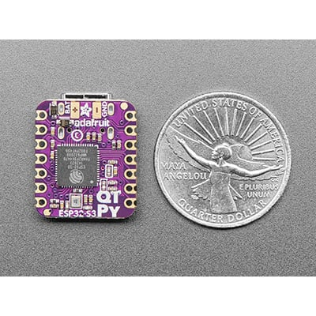

Product Overview: UV Sense Device
Discover how UV Sense can help you stay safe under the sun with its cutting-edge design and advanced UV monitoring features.
Product Description
The UV Sense device is a small, portable UV monitoring tool designed to be easily integrated into your everyday life. With its sleek design and compact size, UV Sense can be attached to your phone, keychain, or bag, ensuring you always have it with you when you need it.
Use Cases:
- On Your Phone: Attach UV Sense to the back of your phone to track UV exposure throughout the day.
- On Your Keychain: Easily clip UV Sense onto your keys for a portable sun safety solution.
- On Your Bag: UV Sense fits perfectly on a bag or backpack, making it ideal for outdoor activities like hiking or sports.
Product Features
UV Sense is equipped with advanced features to help you monitor and manage your sun exposure effectively. Some of the key features include:
- Accurate UV Readings: The built-in UV sensor provides real-time, precise measurements of UV radiation, ensuring you always have up-to-date information about the sun’s intensity.
- Personalized Sun Safety Recommendations: The UV Sense app offers customized tips and alerts based on your skin type, exposure history, and local UV conditions.
- Weather Integration: UV Sense connects with weather data to provide you with daily UV forecasts, so you can plan your outdoor activities safely.
- Historical Tracking: Monitor your long-term sun exposure trends to better understand your skin’s health and make informed decisions.
- Portable and Durable Design: UV Sense is water-resistant and built to withstand daily use, making it an ideal companion for all your outdoor activities.
Technical Specifications
UV Sense combines advanced sensor technology with a compact form factor to deliver powerful UV monitoring in a portable device.
| Specification | Details |
|---|---|
| Size | 0.5 inches (12.7 mm) in diameter |
| Weight | 0.2 oz (5 grams) |
| Battery Life | Up to 6 months with standard usage |
| Sensor Type | Advanced UV sensor with real-time monitoring capabilities |
| Compatibility | iOS and Android (via Bluetooth connection) |
| Water Resistance | IPX7 - Resistant to splashes and rain |